Studio 圖面編輯
Studio 用來配置畫布、加入 Symbol、綁定資料並驗證圖面。完成編輯後儲存 Display，Runtime 才會使用最新內容。
認識 Studio 介面
Studio 由左側功能面板、上方工具列、中央畫布、右側屬性面板及下方時間視窗組成。
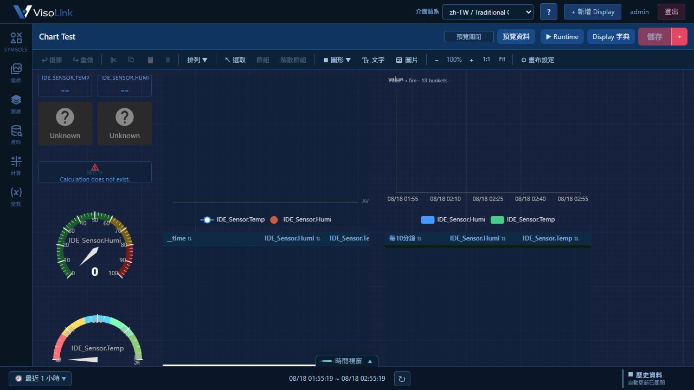
| 區域 | 用途 |
|---|---|
| 左側面板 | 加入元件、瀏覽圖庫、管理圖層與資料物件。 |
| 上方工具列 | 儲存、復原、剪貼、排列、群組及進入 Runtime。 |
| 中央畫布 | 放置、選取與編排 Symbol。 |
| 右側屬性 | 設定所選 Symbol 的基本、外觀、資料與規則。 |
| 時間視窗 | 設定 Editor 預覽資料使用的時間範圍。 |
畫布設定
畫布設定控制 Display 的尺寸、背景、格線及貼齊方式。
- 點選右上方「⚙ 畫布設定」。
- 從 Size Presets 選擇常用尺寸，或直接輸入寬度與高度。
- 在背景設定顏色及透明度。
- 依編排需要開啟格線、貼齊並設定格線大小。
- 關閉設定面板，使用 1:1 或 Fit 檢查畫布。
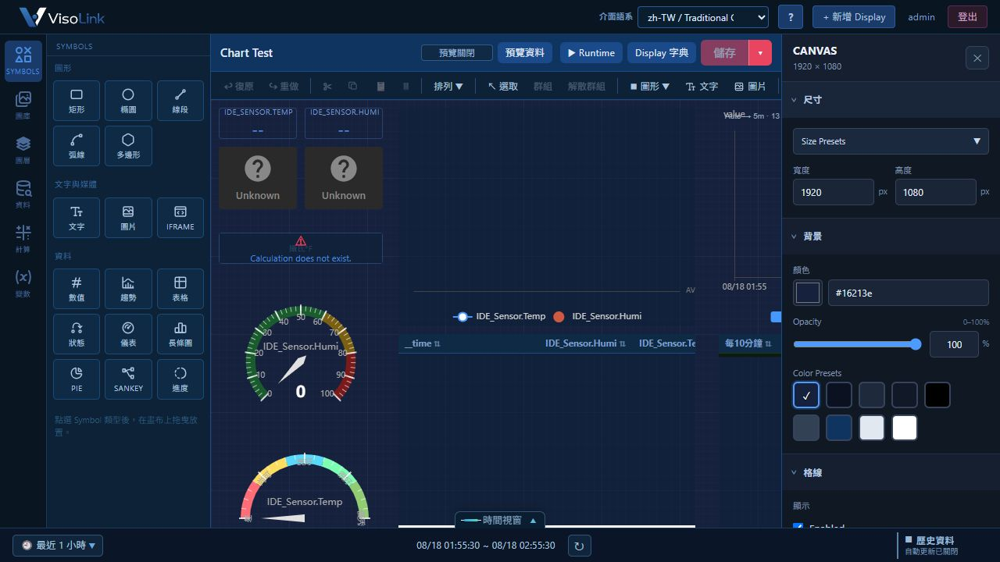
注意：畫布尺寸會影響 Runtime 的顯示比例；正式製作前先確認目標螢幕尺寸。
選取與編輯物件
物件必須先被選取，才能移動、縮放、旋轉、剪貼或刪除。
- 啟用「選取」工具後點選物件；按住 Shift 或 Ctrl 可加入或移除多選項目。
- 拖曳物件本體移動位置；拖曳控制點調整尺寸。
- 需要精確位置時，在右側「位置與尺寸」輸入 X、Y、寬度與高度。
- 使用工具列的剪下、複製、貼上或刪除；也可使用 Ctrl+X、Ctrl+C、Ctrl+V、Delete。
- 方向鍵每次移動 1 px；Shift 加方向鍵每次移動 10 px。
比例控制：繪製、縮放或旋轉時按住 Shift，可使用等比例、水平／垂直或15度角度等限制。
排列與圖層
排列功能控制物件對齊、平均分布及前後順序；圖層面板可快速定位、隱藏或鎖定物件。
- 選取兩個以上物件，開啟「排列」。
- 選擇靠左、水平置中、靠右、靠上、垂直置中或靠下對齊。
- 選取三個以上物件時，可選擇水平或垂直平均分布。
- 使用置於最前、向前一層、向後一層或置於最後調整重疊順序。
- 需要一起移動時選取多個物件後點選「群組」；使用「解散群組」還原。
- 在「圖層」面板點選名稱定位物件，使用眼睛與鎖定控制顯示及編輯。
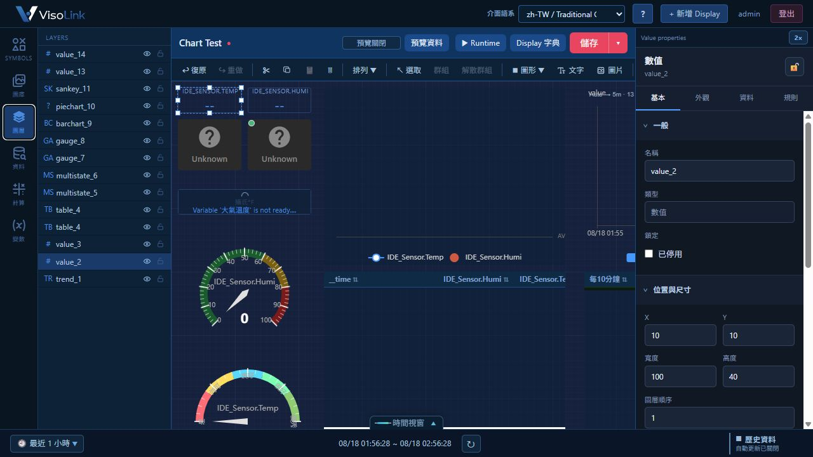
復原與重做
使用復原與重做回到上一個編輯狀態，適合修正誤移動、誤刪除或錯誤屬性調整。
- 操作後點選「↩ 復原」或按 Ctrl+Z。
- 需要重新套用剛才復原的操作時，點選「↪ 重做」、按 Ctrl+Y 或 Ctrl+Shift+Z。
- 按鈕停用代表目前沒有可復原或重做的動作。
注意：復原與重做只處理目前編輯階段的操作，不取代正式儲存或另外儲存。
加入 Symbol
Symbols 面板提供16種正式元件。先選擇類型，再於畫布拖曳出放置範圍。
- 點選左側「Symbols」。
- 選擇圖形、文字與媒體或資料類 Symbol。
- 在畫布上按住滑鼠並拖曳，放開後建立元件。
- 選取新元件，在右側完成名稱、外觀與資料設定。
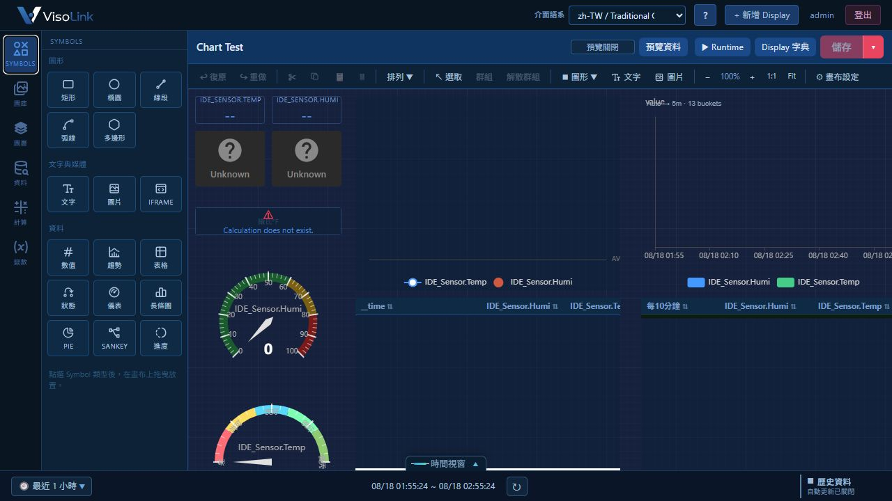
| 分類 | Symbol |
|---|---|
| 圖形 | 矩形、橢圓、線段、弧線、多邊形 |
| 文字與媒體 | 文字、圖片、iFrame |
| 資料 | 數值、趨勢、表格、狀態、儀表、長條圖、Pie、Sankey、進度 |
更換類型：Symbol 類型建立後不直接轉換。需要更換時，建立新 Symbol、重新綁定及確認結果，再刪除舊 Symbol。
Symbol 共通屬性
選取單一 Symbol 後，右側屬性面板依元件提供基本、外觀、資料與規則分類。
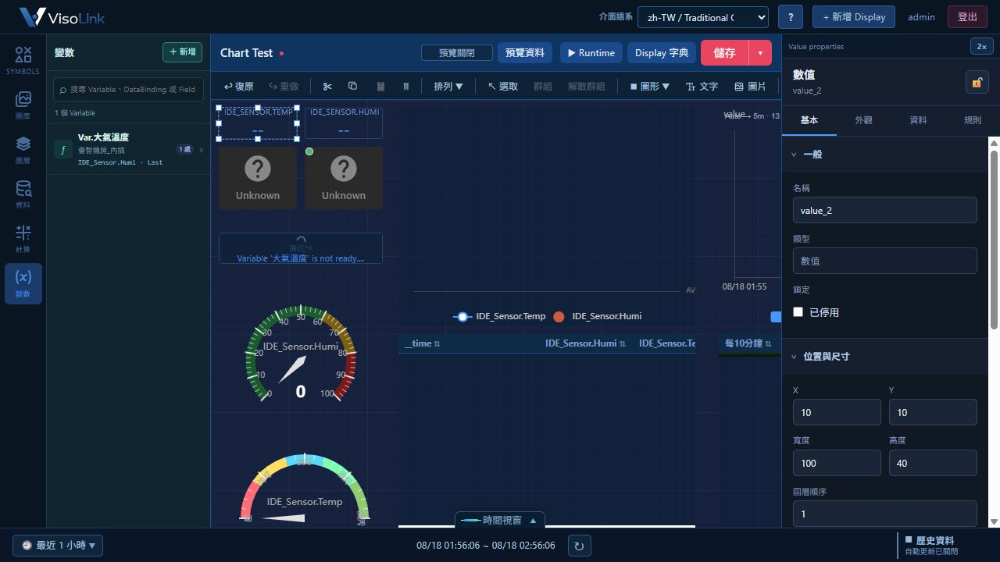
- 在畫布或圖層面板選取 Symbol。
- 於「基本」設定名稱、鎖定、位置、尺寸及專屬內容。
- 於「外觀」設定色彩、字型、框線或其他視覺效果。
- 於「資料」檢查 DataBinding、Field、Calculation 或系列設定。
- 需要依資料改變外觀時，在「規則」建立條件樣式。
預期結果：屬性調整立即反映於 Editor 畫布；儲存後才成為 Runtime 的正式內容。
資料顯示元件
資料顯示元件負責呈現單值、趨勢、明細資料及狀態。
| 元件 | 主要用途 | 主要設定 |
|---|---|---|
| 數值 Value | 顯示單一欄位或計算結果。 | 標題、單位、小數位、空值文字、聚合、時間戳記。 |
| 趨勢 Trend | 呈現一個或多個時間序列。 | Series、時間欄位、線條、圖例與 Tooltip。 |
| 表格 Table | 呈現多欄資料與時間分組。 | 欄位、分頁／虛擬捲動、篩選、彙整、時間分組。 |
| 狀態 State | 依條件顯示文字、顏色或圖示狀態。 | 共用／各狀態資料、比對條件與樣式。 |
- 建立所需元件。
- 從 Data Browser 將 Binding 或 Field 拖至相容的目標元件。
- 在資料分類確認欄位、系列或狀態條件。
- 開啟預覽資料確認時間與結果。
圖表與指示元件
圖表與指示元件將資料轉換為比例、分布、流程或進度。
| 元件 | 用途 |
|---|---|
| 儀表 Gauge | 以刻度、範圍及指針呈現即時數值。 |
| 長條圖 Bar | 比較分類或時間區間中的數值。 |
| Pie | 呈現各項目占比。 |
| Sankey | 呈現節點間的流向與量值關係。 |
| 進度 Progress | 依最小值、最大值及目前值顯示完成比例。 |
- 加入圖表或指示元件。
- 設定資料 Field、Series、Slice 或節點綁定。
- 設定範圍、標題、圖例、顏色及格式。
- 以預覽資料確認無空值、比例錯誤或時間不一致。
瀏覽與搜尋圖形
Graphic Library 提供泵浦、閥件、槽體、管線、馬達、儀表、HVAC、輸送設備等工業圖形分類。
- 點選左側「圖庫」。
- 展開或收合分類。
- 在「搜尋圖形」輸入名稱，縮小結果。
- 將游標移至圖形，確認名稱與外觀。
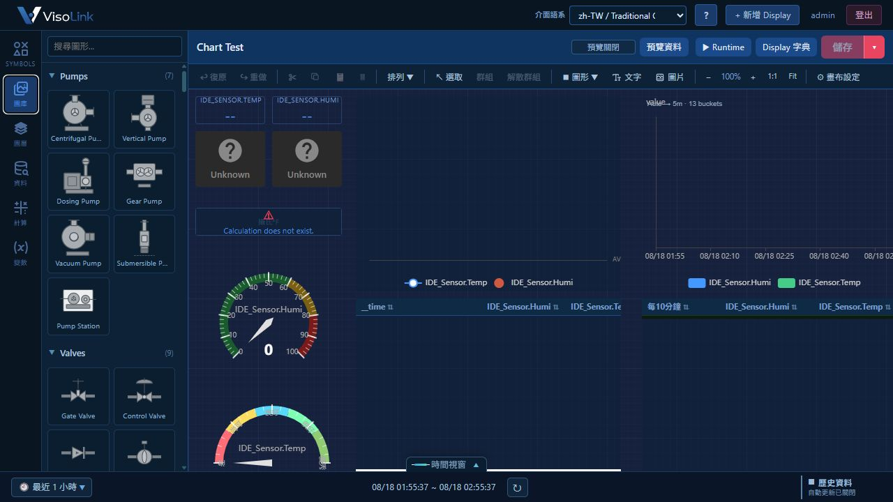
將圖形加入畫布
圖庫項目拖入畫布後會建立 Image Symbol，並依圖形內容比例設定初始範圍。
- 從 Graphic Library 找到圖形。
- 按住圖形並拖曳到畫布指定位置。
- 放開後選取新 Image Symbol，調整位置與尺寸。
- 需要依資料改變顯示時，在 Image Symbol 屬性設定相關規則。
預期結果：畫布新增使用圖庫內容的 Image Symbol，可與其他 Symbol 一起排列與分層。
瀏覽與搜尋資料
Data Browser 以「分類、標籤、已使用」三種模式提供目前帳號有權限使用的 DataBinding 與 Field。
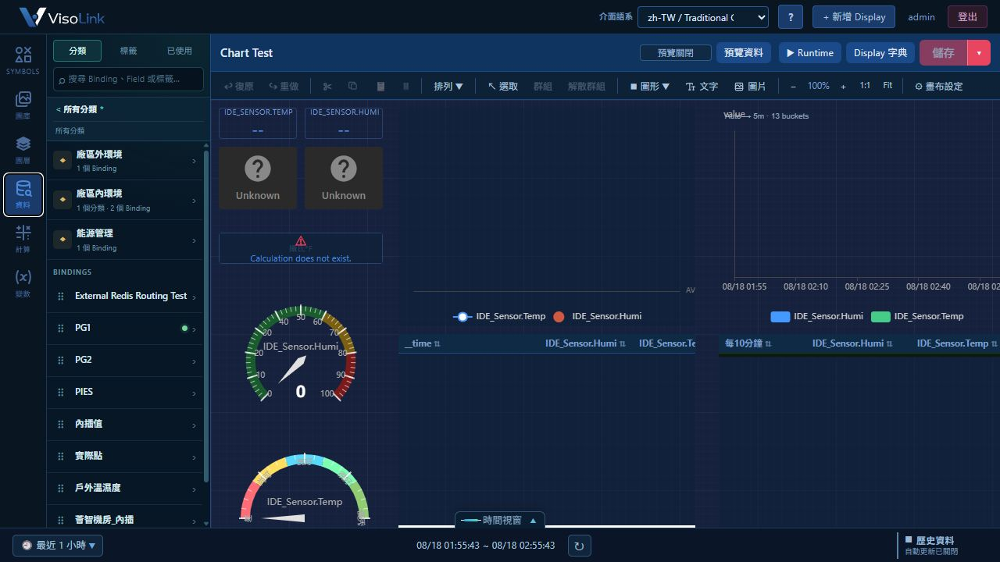
- 點選左側「資料」。
- 選擇「分類」依階層瀏覽、「標籤」依 Tag 瀏覽，或「已使用」只查看目前 Display 已引用資料。
- 使用搜尋欄查找 Binding、Field 或標籤。
- 開啟 Binding 查看 Field、資料型別、單位及目前引用次數。
拖曳套用資料
Data Browser 的拖曳動作用來把 Binding 或 Field 快速套用到既有相容 Symbol，不會在空白畫布自動建立元件。
- 先在畫布建立 Value、Trend、Table、State、Gauge、Bar、Pie 或 Progress 等相容元件。
- 在 Data Browser 找到 Binding 或 Field。
- 按住拖曳控制符號「⠿」，拖到目標 Symbol 上。
- 目標顯示可接受提示後放開。
- 在右側資料屬性確認自動加入的 Field、Series 或欄位。
相容性：圖片、文字、iFrame 與 Sankey 不接受一般 Binding／Field 快速套用；Calculation 只接受 Value、Shape、Gauge、State 與 Progress。
Symbol 資料綁定
資料綁定決定 Symbol 從哪一個 DataBinding 讀取哪些 Field，並依元件類型形成單值、欄位、Series 或 Slice。
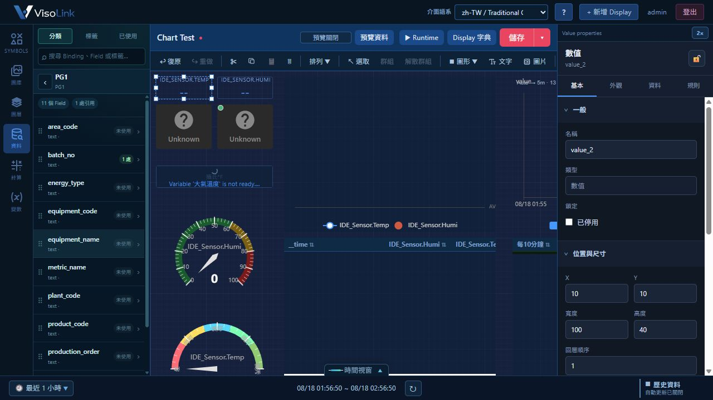
- 選取 Symbol，開啟右側「資料」。
- 以拖曳快速套用，或在屬性中指定 DataBinding 與 Field。
- 多序列元件逐一新增、排序或移除 Series／欄位。
- 確認時間欄位及各資料來源的時間關係。
- 開啟預覽資料檢查結果。
找不到資料：先確認後台資料權限、DataBinding 是否啟用、Field 是否仍存在，以及目前帳號是否可使用。
格式、單位與空值
資料顯示不只取決於綁定，還需要依元件設定聚合、單位、小數位及無資料狀態。
- 選取資料 Symbol。
- 設定標題與單位；Value、Gauge 等元件可沿用 Field metadata 的單位。
- 設定小數位及必要的數值格式。
- 依用途選擇最新值、最早值、平均值、中位數、最大值或最小值等聚合。
- 設定空值文字，例如「--」或「無資料」。
- 以有資料及無資料情境分別預覽。
預期結果：資料以一致格式呈現，無資料時不會被誤認為零值。
Variable
Variable 將 DataBinding Field 與聚合結果命名為可重複使用的圖面變數。
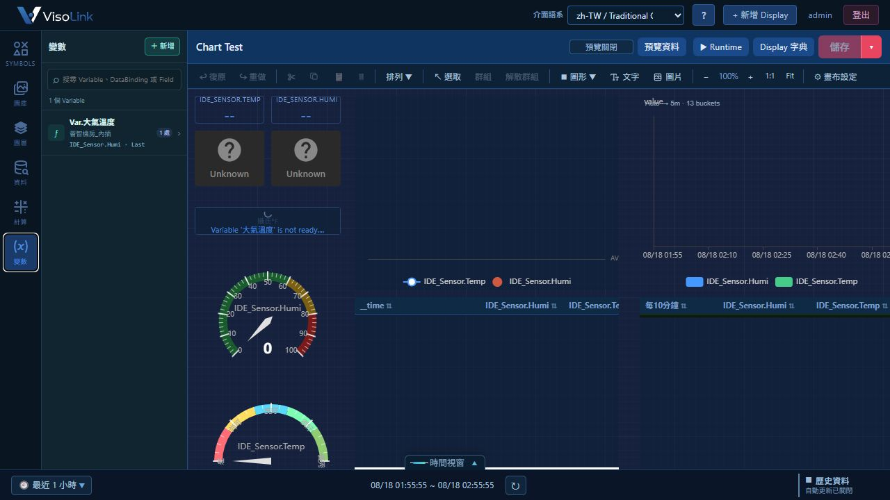
- 點選左側「變數」。
- 點選「＋新增」，設定 Variable 名稱。
- 選擇 DataBinding、Field 與聚合方式。
- 儲存 Variable，確認清單顯示來源及引用次數。
- 將 Variable 用於 Calculation 或可接受變數的設定。
命名：使用可辨識的業務名稱；變更或刪除前先查看引用次數，避免 Calculation 失效。
Calculation
Calculation 使用 Variable、常數、運算子與函數形成衍生值，並可拖曳套用到相容 Symbol。
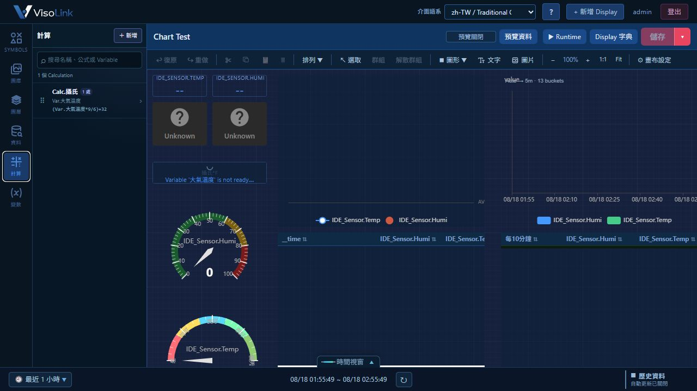
- 點選左側「計算」。
- 點選「＋新增」，輸入名稱與公式。
- 在公式中引用已建立的 Variable。
- 確認公式驗證成功後儲存。
- 將 Calculation 拖曳到 Value、Shape、Gauge、State 或 Progress。
- 開啟預覽，確認所有 Variable 已取得資料且結果合理。
異常訊息：若顯示 Variable 尚未就緒或 Calculation 不存在，先檢查名稱、引用關係、來源資料與時間範圍。
儲存圖面
上方圓點表示有尚未儲存的變更；儲存完成後，Runtime 才會使用最新圖面設定。
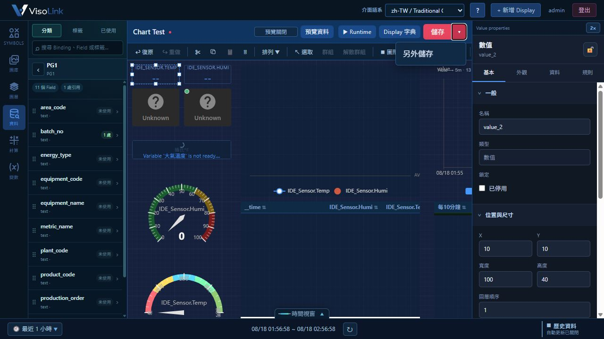
- 完成編輯後先以預覽資料檢查內容。
- 點選「儲存」更新目前 Display。
- 需要保留原版本時，開啟更多儲存選項並選擇「另外儲存」。
- 確認尚未儲存提示消失。
注意：離開 Studio 前先確認是否仍有尚未儲存提示；「另外儲存」會建立另一個 Display。
預覽圖面
「預覽資料」在 Editor 中載入目前時間視窗的一筆資料快照，用於確認綁定、格式、規則與計算結果。
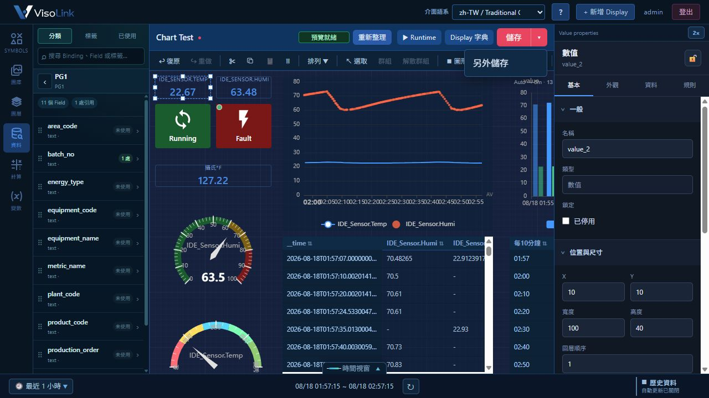
- 在下方時間視窗選擇預覽範圍。
- 點選「預覽資料」。
- 等待快照載入完成。
- 逐一確認數值、圖表、狀態、空值及 Calculation。
- 需要完整互動與持續監看時，點選「▶ Runtime」。
預期結果：畫布顯示所選時間情境的資料結果；問題可在儲存前被發現。